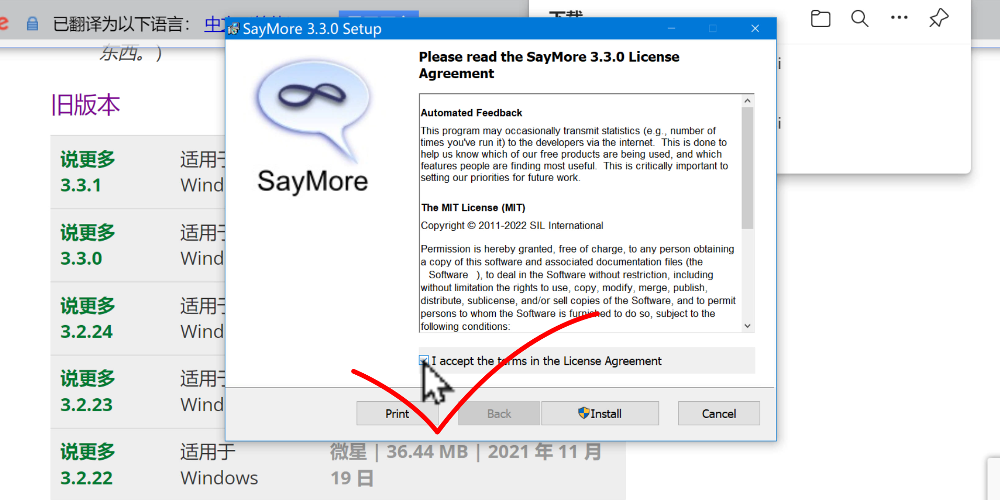
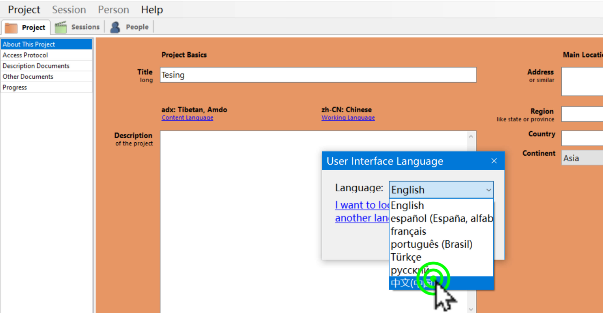

Saymore ཡིག་འབེབ་མཉེན་ཆས་དེ་རང་ཉིད་ཀྱི་གློག་ཀླད་ནང་འཇུག་སྤྲོད་དང་སྒོ་འབྱེད། སྐད་ཡིག་བརྗེ་ཚུལ་བཅས་ངོ་སྤྲོད་བྱས་ཡོད།
ཚོད་ལྟའི་དྲི་བ་རྣམས་ལ་ལན་རེ་ངེས་པར་དུ་འདེམ་རོགས། དེ་དག་ཐོག་མ་ནས་ཤེས་དགོས་པའི་ངེས་པ་མེད་པས་གང་རུང་ཞིག་འདེམ་ཆོག
ཡིག་འབེབ་མཉེན་ཆས་འཇུག་སྤྲོད་བྱ་ཚུལ་གྱི་གོ་རིམ་རྣམས་ངོ་སྤྲོད་བྱས་ཡོད།
👇 དེ་ཇི་ལྟར་བྱ་ཚུལ་ལ་གཟིགས།

སློབ་ཚན་གྱི་བརྙན། དྲ་ཐག་འདིར་སྣུན།
དྲི་བ། མཉེན་ཆས་འཇུག་སྤྲོད་བྱེད་པར་ཐོག་གང་གནོན་དགོས་སམ།
打开文件༽ (正确回答) 运行༽ 安装༽
ཡིག་འབེབ་མཉེན་ཆས་སྒོ་འབྱེད་ཚུལ་དང་རྩ་བའི་ཁྱད་ཆོས་ངོ་སྤྲོད་རགས་བསྡུས་བྱས་ཡོད།
👇 དེ་ཇི་ལྟར་བྱ་ཚུལ་ལ་གཟིགས།
སློབ་ཚན་གྱི་བརྙན། དྲ་ཐག་འདིར་སྣུན།
དྲི་བ། མཉེན་ཆས་སྒོ་ཕྱེ་དུས་ཐོག་མར་གང་ནས་འཚོལ་དགོས་སམ།
百度༽ 开始༽ (正确回答) software.sil.or༽
ཡིག་འབེབ་མཉེན་ཆས་ཀྱི་སྐད་ཡིག་བརྗེ་བསྒྱུར་བྱ་ཚུལ་དང་དེའི་སྐད་ཡིག་ཡིག་བསྒྱུར་བྱ་ཚུལ་ངོ་སྤྲོད་རགས་ཙམ་བྱས་ཡོད།
👇 དེ་ཇི་ལྟར་བྱ་ཚུལ་ལ་གཟིགས།

སློབ་ཚན་གྱི་བརྙན། དྲ་ཐག་འདིར་སྣུན།
དྲི་བ། མཉེན་ཆས་ཀྱི་སྐད་ཡིག་བརྗེ་སའི་སྡེ་ཚན་གང་ཡིན་ནམ།
人员༽ 任务༽ 项目༽ (正确回答)